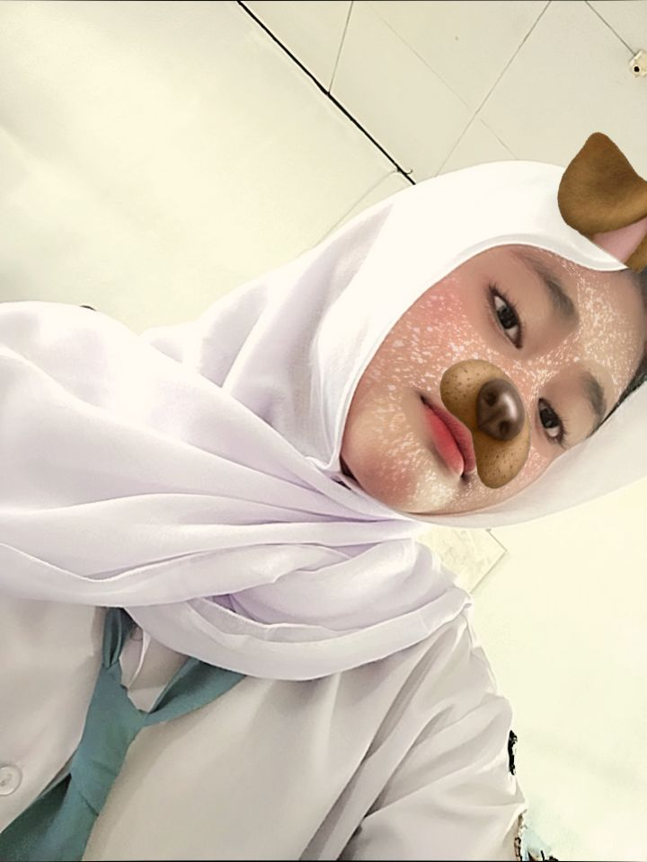

likes: Playing Games
dislikes: Toxic People
16 y/o • Aquarius
27 Januar0 2010

Namaku Nana. Aku adalah seorang remaja yang penuh semangat dalam menjalani kehidupan sehari-hari. Aku lahir di Semarang pada tanggal 27 Januari 2010. Saat ini, usiaku 16 tahun.
Aku memiliki tinggi badan sekitar 159cm dan berat badan 60 kg. Dengan kondisi tubuh tersebut, aku selalu berusaha menjaga kesehatan dengan baik agar tetap aktif dalam berbagai kegiatan.
Dalam hal makanan, aku sangat menyukai cumi dan ayam goreng karena rasanya yang enak dan cocok di lidahku. Sedangkan untuk minuman, aku paling suka es teh manis dan coffe yang segar.
Di waktu luang, aku memiliki beberapa hobi yang aku nikmati, seperti bermain game, mendengarkan musik, dan menonton film. Hobi-hobi tersebut membuatku merasa senang dan membantu menghilangkan rasa lelah setelah beraktivitas.
Aku adalah pribadi yang sederhana dan suka mencoba hal-hal baru. Aku berharap bisa terus berkembang dan meraih cita-cita di masa depan.